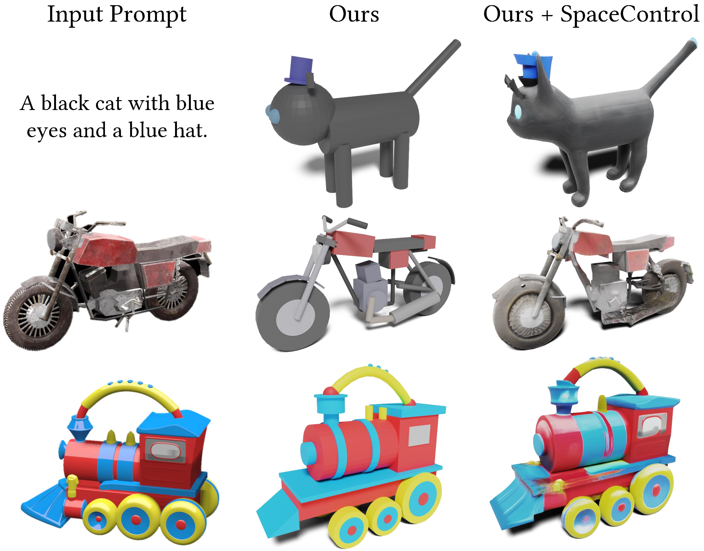
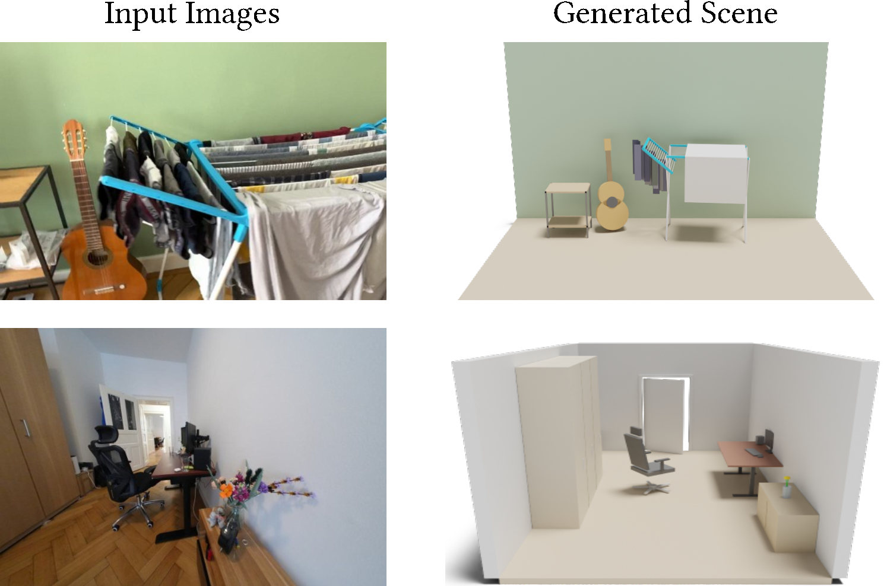
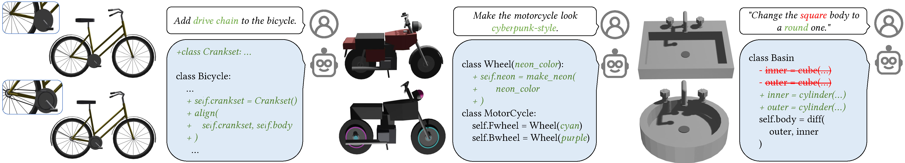
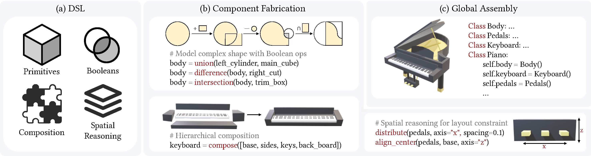

Figure 10. High-fidelity shape generation results via external model conditioning. The aDSL program (“Ours”) serves as a geometric condition to guide the external generator via the SpaceControl protocol (“Ours + SpaceControl”).
Programmatic representations provide a compelling paradigm for 3D content creation, enabling fine-grained edits, interpretability, and explicit structural control. Yet, agentic workflows that rely on large language models (LLMs) to author 3D programs remain brittle, often failing to translate high-level intent into consistent low-level geometry. We attribute this fragility to a mismatch between existing programmatic interfaces and the reasoning strengths of LLMs, which favor semantic structure and spatial relations over fragile numeric choices. In this paper, we jointly design an Agent-centric Domain-Specific Language (aDSL) and a role-specialized multi-agent system to close this gap. aDSL bridges semantic logic and geometric constraints by emphasizing composability and spatial reasoning; it enables agents to manipulate geometry through relational operators instead of brittle absolute coordinates. Building on aDSL, our training-free multi-agent system follows a Plan–Execute–Critic loop to decompose requests, synthesize code, and iteratively repair errors and constraint violations using execution feedback. Experiments show that this co-design improves robustness, controllability, and faithfulness to user intent. Our method outperforms prior LLM-based baselines on text-to-shape and image-to-shape tasks while preserving explicit structure, editability, and interpretability. It also enables downstream applications such as articulated object creation and structured scene composition. Our code is available at https://github.com/sig-pku/aDSL.




